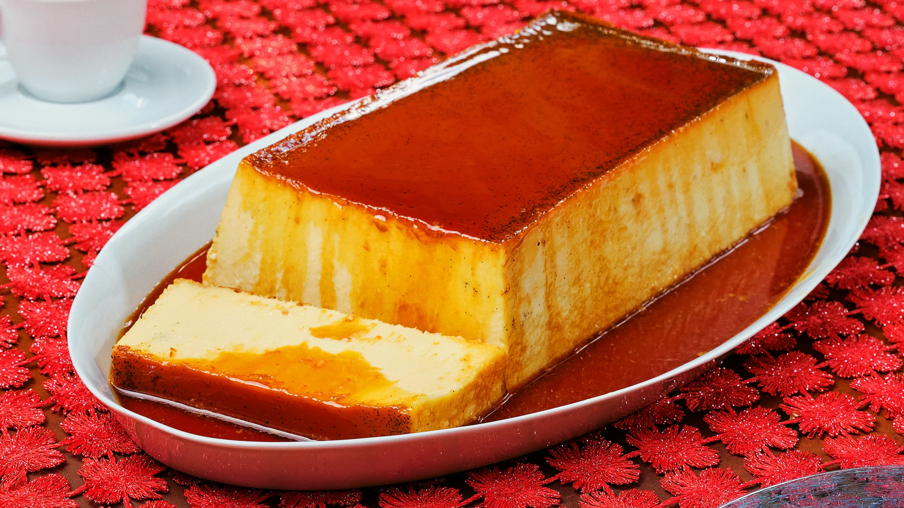

Enchiladas Verdes

Enchiladas with Serrano Pepper Salsa
Enchiladas Recipe by Letty
Ingredients
- 2 c white sugar
- 1 12oz can Nestle Carnation Evaporated Milk
- 2 cans lechera
- 2 spoonfuls of vanilla
- 6 eggs
- 18 oz cream cheese
- caramel
Steps
- Preheat oven to 375F
- Mix evaporated milk, lechera, vanilla, eggs, and cheese in blender
- Heat sugar in a pot and stir until caramelized light brown.
- Pour caramel into deep baking pan. Then add the mix from the blender.
- Put baking pan into another container with water into the oven.
- Bake for 45 minutes. Check until it is golden brown.
- Wait until cooled before cutting around the sides and serving.